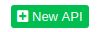

Labs
This section has two labs you can follow to experiment some key features:Lab 1: Creating a program using the blueprint editor and exporting as executable JAR.
Lab 2: Creating a REST API that executes a blueprint.
Lab 1: Creating programs
Let's create a classic "Hello world" program to have a look at the basic functions.Click on in the navigation bar to access the catalog where you can manage programs and blueprints.
Click the button to create a new program. Name it as you want (or leave "New program").
Expand the program item and you'll see there are two predefined blueprints: "Main" and "Events".
Left click on "Main" item.
The new window is a blueprint editor. A blueprint has at least two nodes: an entry point (where execution starts) and a return node (where execution ends).
To add more nodes right-click on a blank point of the grid and a selector will appear.
A search field helps to find a specific node. Search "Print String" node and select it. Now that the new node is inside the editor click on the text field and type "Hello world!" in the dialog window being opened. Then click "OK".
Blue connectors control the execution flow, while other connectors are for passing data between nodes.
To link two connectors left-click on the first and track the edge onto the second, then release.
Connect nodes as in the picture: Compile the program by clicking the button on the toolbar.
You will see the result in the console.
Let's test the blueprint.
Click on the button of the toolbar and then on the "OK" button of the Run dialog.
You should see:
Launching program...
Connected
Getting response...
Successfully executed
Hello world!
Go back to the catalog panel and refresh.The status of the program is now "Compiled". Click on the dots and select "Create JAR".


Click on it and save the JAR file wherever you want.
Open a Linux terminal and move into the directory where the file has been saved.
Execute the JAR:
$ java -jar "New program.jar"
Hello world!
Every exported jar has some options. Try this:
$ java -jar "New program.jar" --help
This example has shown how a program can be created using the blueprint editor and exported as an executable JAR.Lab 2: Creating REST APIs
In this exercise we will create an HTTP end point that executes a blueprint and returns a JSON response.Click the button to create a new blueprint.
Name it "BPLab" and click OK.
The blueprint editor for BPLab will open.
Create a JSON object and add a string item called "message".
Then set the object as the HTTP response.
The blueprint should be as shown in the following picture:
Compile the program by clicking and close the editor tab.
Click on in the navigation bar to access the API management.
Click on  button.
Here you create an API and bind it to a blueprint of a given program.
Name the API "lab", select the program we created and the blueprint "BPLab". Then hit "OK".
Now make a GET request to https://localhost:8443/api/lab
This will execute the blueprint that is linked to the API "lab", and the response will be returned to the client.
Copyright © 2020 Fabio Leone